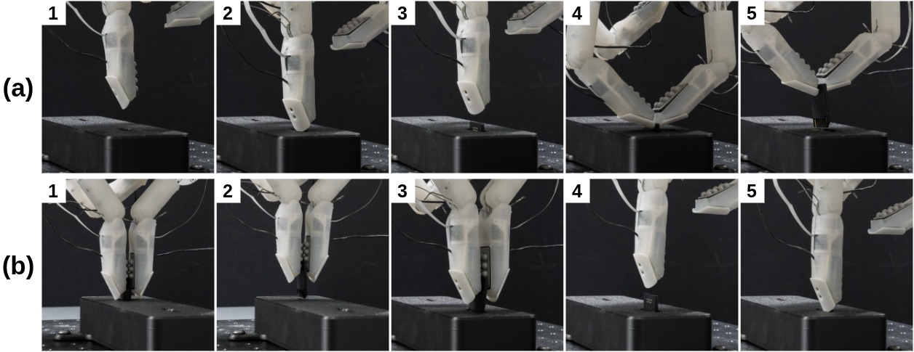
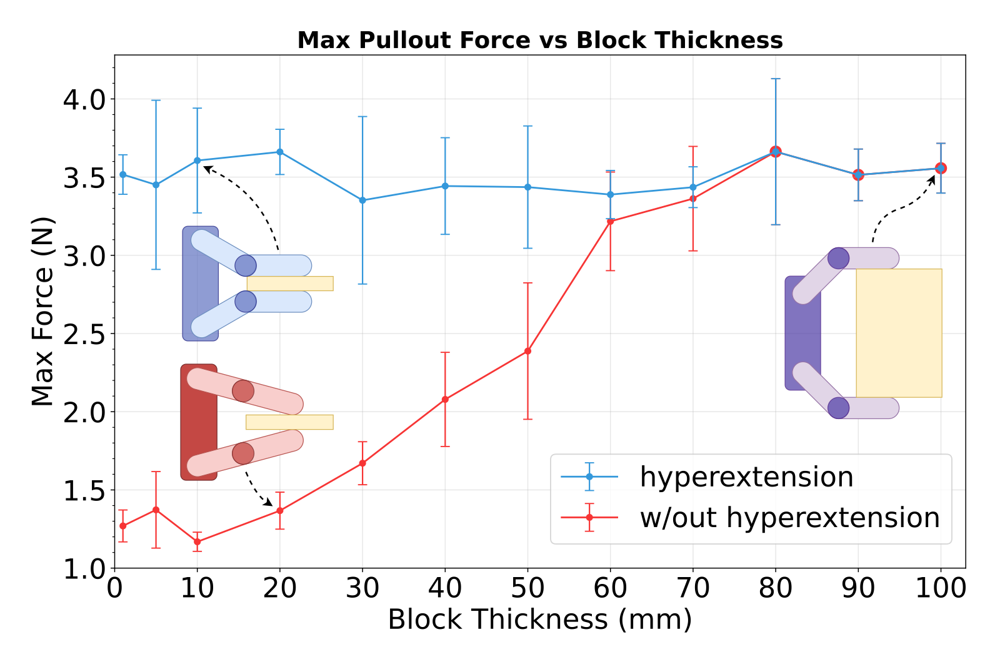
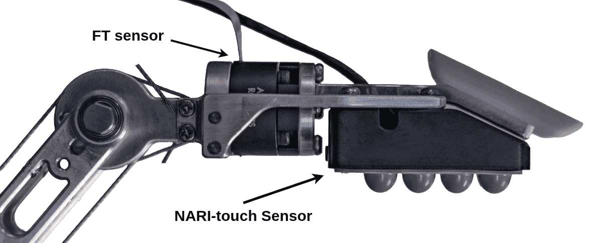
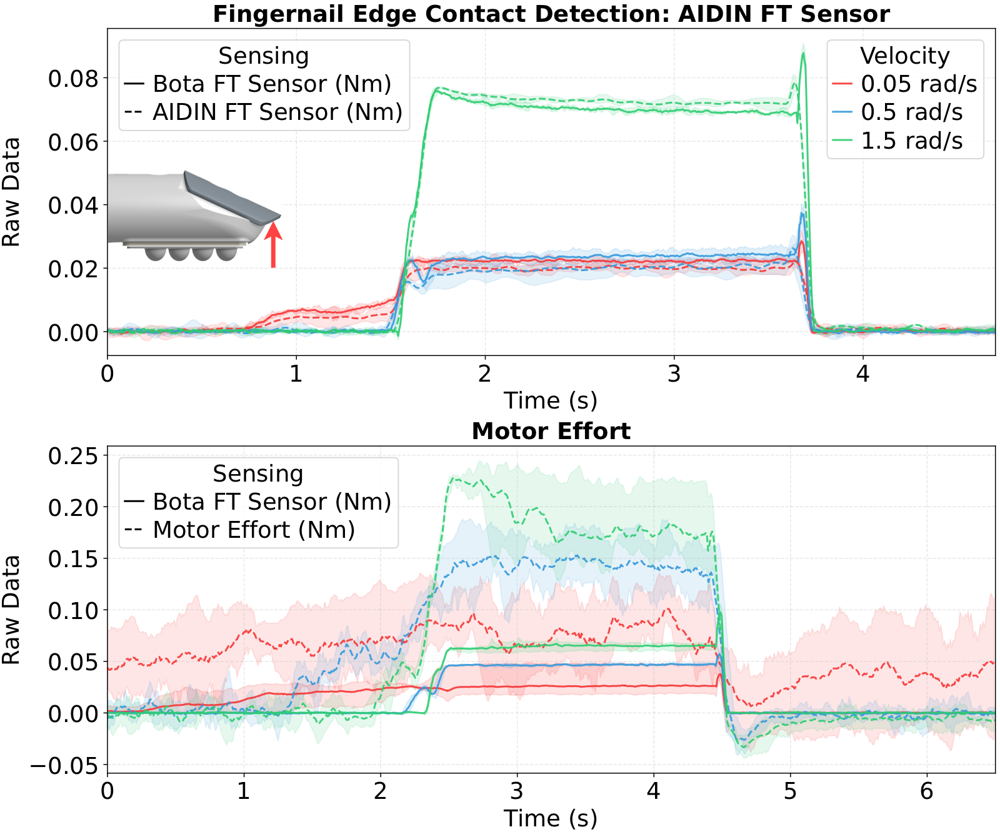
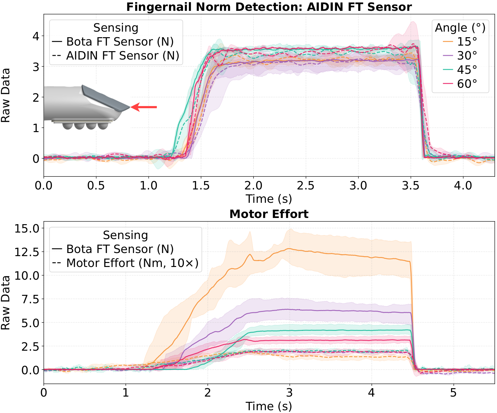

Abstract
Manipulating thin objects and constrained interfaces requires more than a human-like hand shape. The fingertip must align with surfaces, engage small edges, and sense subtle contact forces during interaction. The ARISTO Hand addresses this through controlled distal hyperextension and a rigid-soft fingertip sensing architecture. A sensorized fingernail provides direct force-torque feedback during edge contact, poking, and recessed interactions, while a soft capacitive tactile pad supports stable acquisition and compliant grasping. The tendon-driven finger enables distal alignment, allowing the fingertip pad to flatten against thin objects and planar surfaces. Together, these capabilities support fine-grained manipulation tasks such as SD card extraction and insertion, penny pickup, and contact-rich teleoperation.
Contributions
Controlled Distal Hyperextension
Active distal hyperextension rotates the fingertip pad into surface alignment, enabling stable contact with thin objects and planar surfaces.
Decoupled Rigid-Soft Sensing
A rigid nail-mounted force-torque sensor captures edge contact, while a compliant capacitive pad provides distributed tactile feedback.
Contact-Level Validation
Experiments validate how fingertip geometry, distal force sensing, and tactile feedback improve thin-object and constrained-interface manipulation.
SD Card Extraction and Insertion
The SD card task combines several difficult contact modes: recessed slot access, force-controlled push-to-eject interaction, thin-object retrieval, compliant acquisition, and final push-to-lock insertion. ARISTO handles these stages by switching between rigid fingernail interaction, tactile pad acquisition, and active distal hyperextension.
Insertion
Active distal hyperextension aligns the tactile pad with the card surface for stable acquisition, while the rigid nail completes the push-to-lock insertion.
Extraction
The rigid fingernail enters the recessed SD card slot and uses force-torque feedback to trigger the push-to-eject mechanism before retrieving the card.

Hyperextension for Thin-Object Grasping
Thin objects are difficult to grasp because standard flexion often produces edge contact instead of stable pad contact. ARISTO uses active distal hyperextension to rotate the fingertip pad into alignment with the object surface, increasing contact area and preserving pull-out force.

Pull-out tests were run without sensor feedback to isolate the kinematic effect of distal hyperextension. The ablation study intentionally limited forces to avoid actuator saturation during repeated trials. The 10.13 N measurement shows the higher peak pull-out force available when motor gains are not constrained.
Fingertip Sensor Design
The fingertip separates rigid edge interaction from compliant surface contact. A rigid nail-mounted force-torque sensor measures contact through the fingernail, while a soft capacitive tactile array measures distributed pressure across the finger pad.
This mechanical separation lets ARISTO distinguish nail contact, pad contact, and transitions between the two during fine manipulation.

Sensing Fidelity
The nail-mounted force-torque sensor and proprioceptive motor effort are compared across two critical conditions: low-velocity edge contact and geometry-dependent normal force detection. Both experiments show that distal sensing is necessary for reliable fine-grained manipulation.
Edge Contact Detection

The nail-mounted FT sensor produces clean, repeatable contact steps across approach velocities. Motor effort is noisy and velocity-dependent. At low speeds (0.05 rad/s), stiction obscures contact events entirely.
Geometry-Invariant Force Detection

The distal FT sensor tracks the target force within ±0.2 N across all joint angles. Motor effort degrades near straight configurations. At 15°, targeting 3.1 N with proprioception resulted in applying 12.3 N, a ~300% error.
Hand and Finger Design
ARISTO uses a tendon-driven finger architecture designed for controlled distal contact. Fully wrapped antagonistic tendons route around the PIP joint, idler pulley, motor pulley, and tendon tensioners, maintaining an approximately constant effective moment arm across flexion and hyperextension.
This routing enables active distal hyperextension while preserving the nominal grasping workspace, allowing the fingertip pad to align with flat surfaces without sacrificing standard flexion-based grasps.

Additional Demos
Coin pickup
Fingernail-assisted penny pickup
The rigid fingernails engage the edge of a penny lying flat on the table, enabling pickup of a thin object that is difficult to grasp with soft fingertip contact alone.
Tool manipulation
Tool manipulation with multimeter probe
ARISTO picks up a multimeter probe and performs a continuity test on the PLATO Hand, demonstrating precise tool use with the new hand.
Teleoperated Jenga
Teleoperated Jenga manipulation
ARISTO is teleoperated with an exoskeleton hand while a Lambda haptic device controls the robot arm, enabling contact-rich Jenga manipulation.
BibTeX
@inproceedings{kim2026aristo,
author = {Kim, Aaron and Kang, Dong Ho and Helwig, Mark and Seo, Mingyo and Yokoyama, Kazuto and Narita, Tetsuya and Sentis, Luis},
title = {ARISTO Hand: Sensing-Driven Distal Hyperextension for Fine-Grained Manipulation},
booktitle = {IEEE/ASME International Conference on Advanced Intelligent Mechatronics},
year = {2026},
note = {Accepted},
}